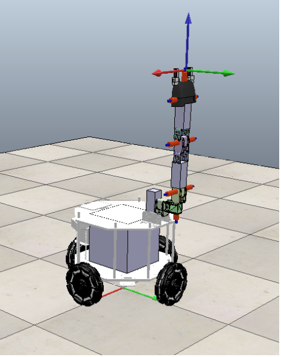
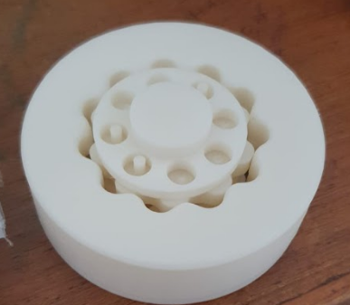
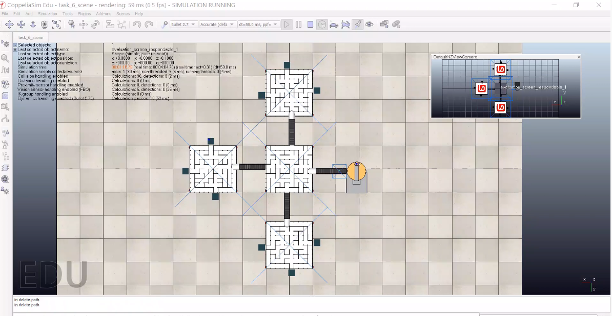
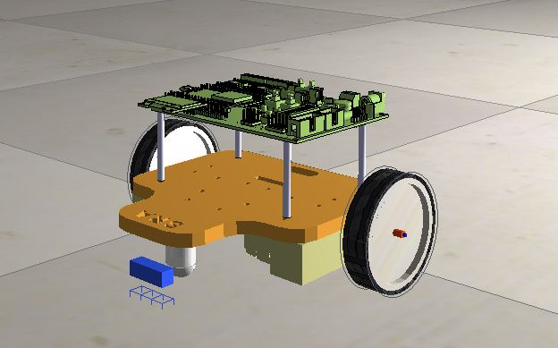
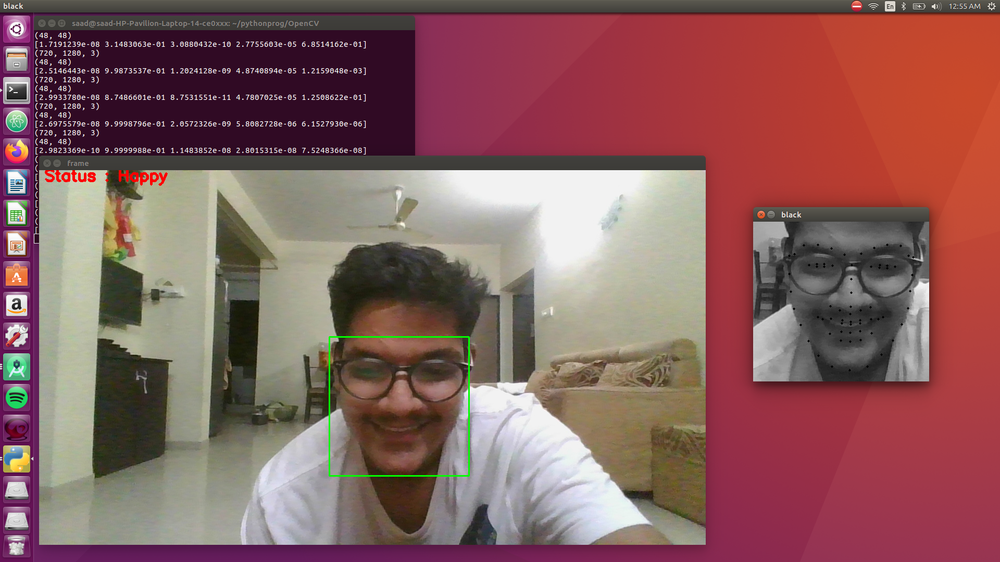

Mobile Manipulator
Designed a 5 DoF Mobile Manipulator to perform dexterous tasks for industrial purposes, using Solidworks and simulated it in CoppeliaSim and Gazebo. Perform Pick and place operations, implemented object detection and classification using YOLO, enable localisation with sensors and use SLAM for mobile manipulator.
Developed FK and IK for 5 DOF Manipulator, with discrete trajectory generation by computing set of N SE(3) configuration matrices for point-to-point movement of end-effector. Currently testing algorithms on 5 DOF manipulator arm hardware
Quadruped
Designed an economic actuator using BLDC motors, for a Quadruped Robot. Designed compact, anti-Backlash, backdriveable dual-stage cycloidal gearbox with reduction ratio 110:1.
Used Rapid Prototyping (3D Printing) to test designed cycloidal gearbox. Currently designing 2-segmented compliant leg for Quadruped
Used Rapid Prototyping (3D Printing) to test designed cycloidal gearbox. Currently designing 2-segmented compliant leg for Quadruped
Nirikshak Bot
Designed a 2 DOF industry manufacturing ball balancing platform with a maze on top of it and simulated it in CoppeliaSim.
Developed a PID-based Control System for precision control of the platform, and BFS path-planning algorithm for maze-solving by a series of balls and Image Processing for detection of multi-coloured balls and maze walls. Developed scheduler algorithm for multiple balls to solve mazes on interconnected platforms. Led team to top 18 in the National Level e-Yantra Robotics Competition.
Wall-E-Sim
Designed and simulated a Line-Follower bot, equipped to follow lines and solve mazes. Developed a CMake build system for the C++ Tech stack.
Conducted workshop for over 150 freshmen using this simulation as an educational tool for PID and Maze-Solving as a supplement to hardware.
Moodylyser
Implemented Facial Emotion Detection for Live Webcam input using CNN model trained from scratch, libraries used were Keras, Tensorflow.
Detected 68 Facial Landmarks using dlib’s facial landmark detector and OpenCV..